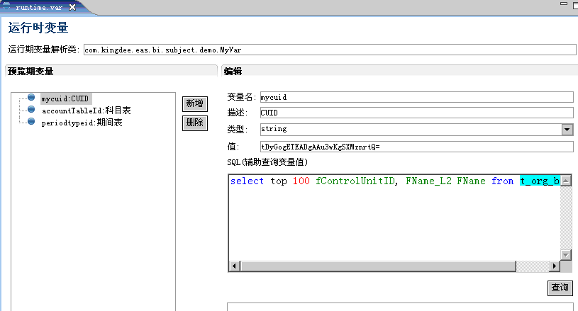

- 运行期变量解析类：指定变量解析类,如果不输入则默认使用公共变量解析类com.kingdee.eas.bi.subject.BaseVarProvider。也可以自定义变量解析类，要求继承com.kingdee.eas.bi.subject.BaseVarProvider。
- 变量解析规则：
若数据源使用变量abc,则执行时将调用变量解析类的getAbc()方法,返回值不限制.
- 预览期变量：可以设置调试期的变量，该变量优先于变量解析类，如果使用到的变量在预览期变量中没有设置，则到解析类中获取。
- 建议：建立自己subject的变量解析类，在com.kingdee.eas.bi.subject下使用subjec t名建立新包。需要公用的变量可以抽取到BaseVarProvider类中。
设计界面如下：
